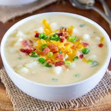

Potato Soup
Ingredients
- 1 pound of bacon, chopped
- 2 stalks celery, diced
- 1 onion, chopped
- 3 cloves garlic, minces
- 8 potatoes, peeled and cubed
- 4 cups chicken stock
- 3 tablespoon butter
- quarter cup all-purpose flours
- 1 cup heavy cream
- 1 teaspoon dried tarragon
- 3 teaspoons chopped freash cilantro
- salt andfreshly ground black pepper to taste
Directions
- Place bacon in a Dutch oven and cook over medium-high heat, turning occasionally,
until evenly browned, 5 to 10 minutes. Drain bacon pieces on paper towels. Drain off
all but 1/4 cup of the bacon grease.
-
Cook celery and onion in the reserved bacon drippings until onion is soft and
translucent, about 5 minutes. Stir in garlic, and continue cooking for 1 to 2 minutes.
Add cubed potatoes, and toss to coat. Saute for 3 to 4 minutes. Return bacon to the pan,
and add enough chicken stock to just cover the potatoes. Cover, and simmer until potatoes
are tender, 15 to 20 minutes.
-
Meanwhile, melt butter in a separate skillet over medium heat. Whisk in flour. Cook, stirring
constantly, 1 to 2 minutes. Whisk in heavy cream, tarragon, and cilantro. Bring cream mixture
to a boil, and cook, stirring constantly, until thickened, about 5 minutes. Add cream mixture
to the potato mixture; stir to combine.
-
Transfer about 1/2 of the soup to a blender and puree. Return to the Dutch oven. Adjust seasonings to taste.
